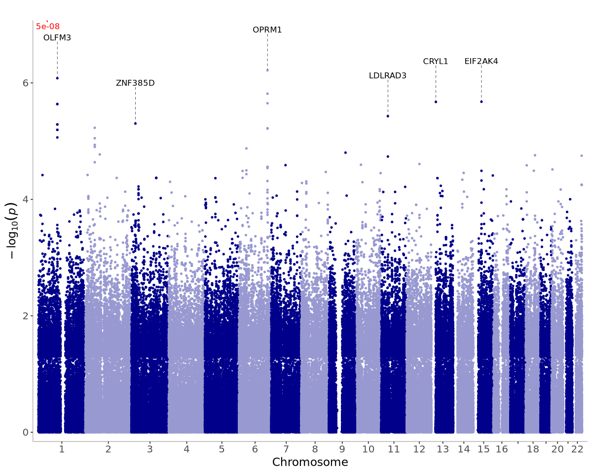
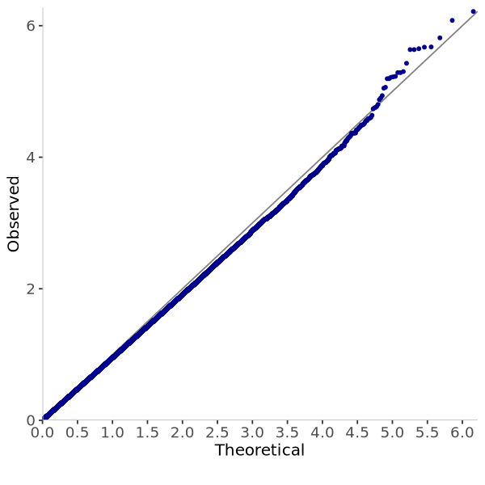
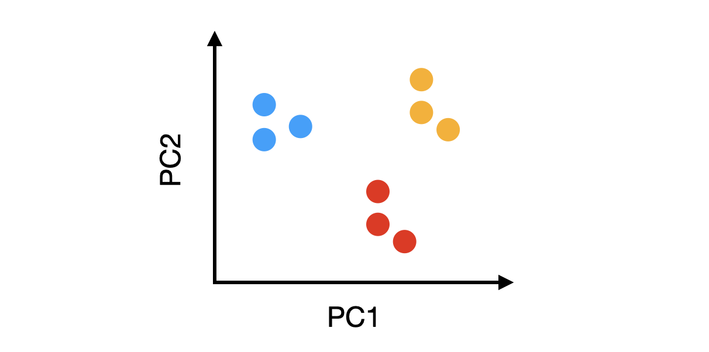

gwas · the structure, the mixed model, the Manhattan plot
Slot 57 gwas, PHM5003 week 6. The one thing: a test of every SNP on a sample with
ancestry structure finds the structure at every SNP, and the mixed model is how it is taken out —
principal components for ancestry, the genetic relationship matrix for relatedness — before the
Manhattan plot and the QQ plot mean anything.
The measurement. Every number and every point on this page is computed live by the code copied
verbatim out of _lab/gwas-measure.mjs — simulateCohort,
grm, eigenSym, topEigen, pcs,
olsScan, weightedScan, glsScan, remlH2,
fastgwa, lambda, bonferroni, summarise,
comments and all — drawn with the seeded makeRng from
widgets/core/rng.js. Copied rather than imported: that module runs its seven
measurement tables at the top level, so importing it into a page would execute about a minute of
console.log on load. The script itself is not touched.
The lesson's own three figures, which the candidates below are measured against. They are the shape the reader has already seen; a widget that draws a fourth shape makes them learn the picture before they can read it.



--c-cluster-a, -b and -c exactly.§0 · The title and the subtitle
Both titles and both subtitles rendered in the shell's own .w-heading at the stage's
550px, with the character count measured against the 140–240 the recent subtitles hold (2.10).
§1 · The Manhattan plot, and what has to be beside it
The default cohort: 300 people in three subpopulations, 2,000 SNPs on 4 chromosomes of 500 at even spacing, nested ancestry (two subpopulations FST 0.005 apart, the third 0.05 from both), a trait difference of 1 SD between the outer subpopulations, three causal SNPs each explaining 0.12 of the trait's variance, no families, seed 1. A the Manhattan plot alone, drawn under two models. B the Manhattan plot with the QQ plot beside it, drawn under all three.
§2 · What the QQ plot is for
Three QQ plots from the same three tests. Under SNP only the points leave the line at the very bottom and stay off it; under + 2 PCs the body is back on the line and only the causal SNPs are above it; and a cohort with no trait difference between subpopulations is on the line with the structure still in the genotypes. The third panel is the control: it separates "the confounder is in the trait" from "the sample has ancestry in it".
§3 · The cohort
A the PC scatter drawn small beside the Manhattan plot, on one stage. B a second page with the scatter at 300px and the genetic relationship matrix itself as a 300 × 300 image, one pixel a pair, at Families = none and at Families = sibships of 4.
§4 · The variance step, and the case where it finds nothing
What the mixed model estimates once, before the first SNP is tested. A core's readout tiles. B the tiles with Vg against Ve as a bar. Three states in each: the default cohort at seed 1, the same settings at seed 4, and sibships of 4 with a family effect of 1 SD.
§5 · Families
The same cohort with the 300 people arranged as 75 sibships of 4, each sibship sharing a trait effect of 1 SD, tested under + 5 PCs and then under + 5 PCs + GRM. The principal components are ancestry and nothing else; a sibship is a second confounder they do not see.
§6 · The two steps, as a run
Three stills of one Play run on the default cohort under + 5 PCs: after the variance step with no SNP tested yet, after 200 SNPs, and after all 2,000. The expensive step happens once and the Manhattan plot fills in left to right behind it.
§7 · The whole rail, at 300px
Core's own DOM inside a .w-split, measured after document.fonts.ready;
nothing under widgets/core/ is touched by this page. A every field, at
Families = none. B the same rail at Families = sibships of 4, which is the state that adds the
Family effect slider. C trimmed: the causal effect fixed at 0.12 and the PC count fixed at 5.
§8 · Every reader-facing string
Title, subtitle, page names, control labels and their detail lines, option labels,
readout labels and notes, canvas captions and notes, legend entries, and the line the widget prints
when the variance step finds nothing. A detail says what the control is and never what
will happen to the figure; no line names a lesson, a cell or a notebook.